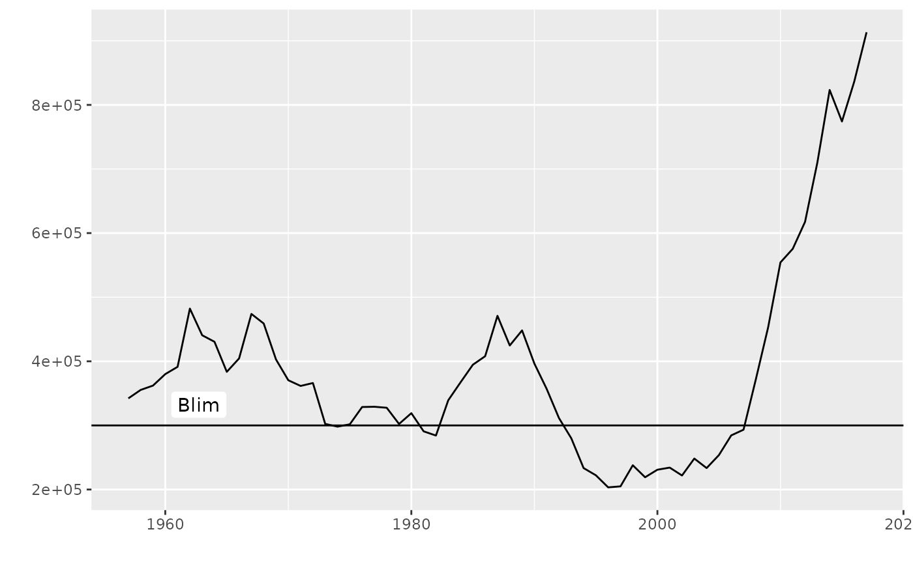
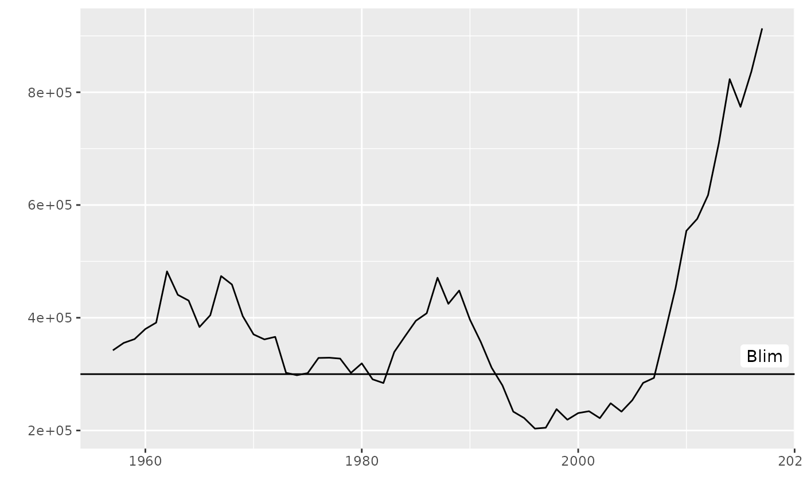
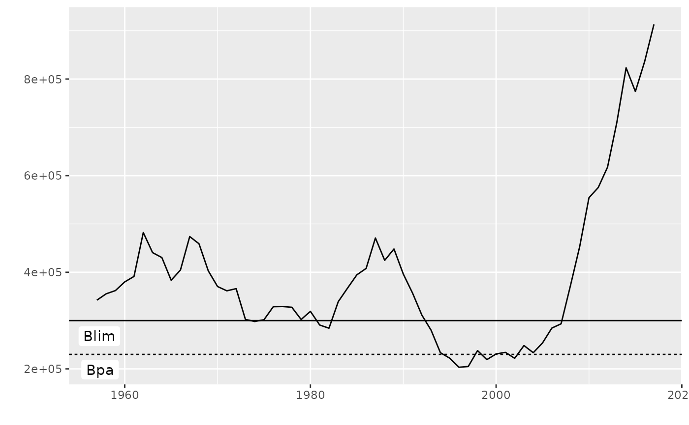
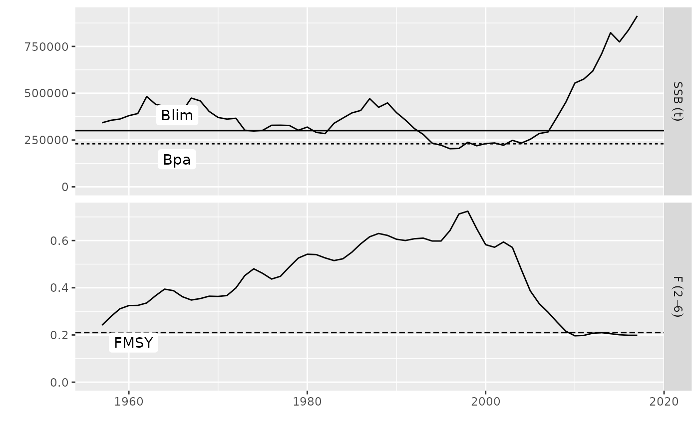
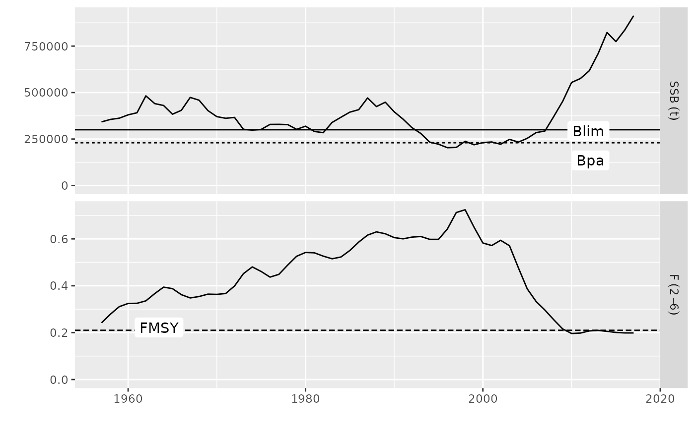

This `geom` shows a horizontal line for each `param` in a `FLPar` object and labels it using the `param` dimnames
geom_flpar(mapping = NULL, data, ..., x, na.rm = FALSE)
| mapping | Set of aesthetic mappings created by |
|---|---|
| data | The data to be displayed in this layer. There are three options: If A A |
| ... | Other arguments passed on to |
| x | Position for params labels on the x axis |
| na.rm | If |
`geom_flpar` understands the following aesthetics (required aesthetics are in bold): - `*x*` - `y`, defaults to 90 - `yintercept`, defaults to params value (line). - `label`, defaults to params names. - `alpha` - `colour` - `linetype` (line)
data(ple4) plot(ssb(ple4)) + geom_flpar(data=FLPar(Blim=300000), x=1960)  plot(ssb(ple4)) + geom_flpar(data=FLPar(Blim=300000), x=2015)  plot(ssb(ple4)) + geom_flpar(data=FLPar(Blim=300000, Bpa=230000), x=1960)  # geom works for multiple facets, separate params using name-matching FLPars() plot(ple4, metrics=list(SSB=ssb, F=fbar)) + geom_flpar(data=FLPars(SSB=FLPar(Blim=300000, Bpa=230000), F=FLPar(FMSY=0.21)), x=c(1964))  # x and y positions can be altered by param plot(ple4, metrics=list(SSB=ssb, F=fbar)) + geom_flpar(data=FLPars(SSB=FLPar(Blim=300000, Bpa=230000), F=FLPar(FMSY=0.21)), x=c(2015, 2015, 1960), y=c(340000, 180000, 0.18)) 